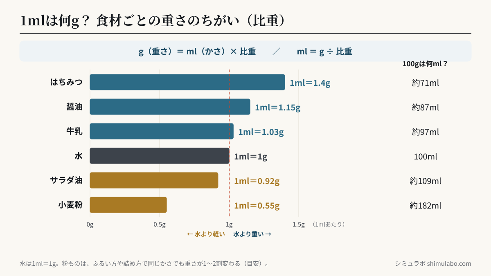
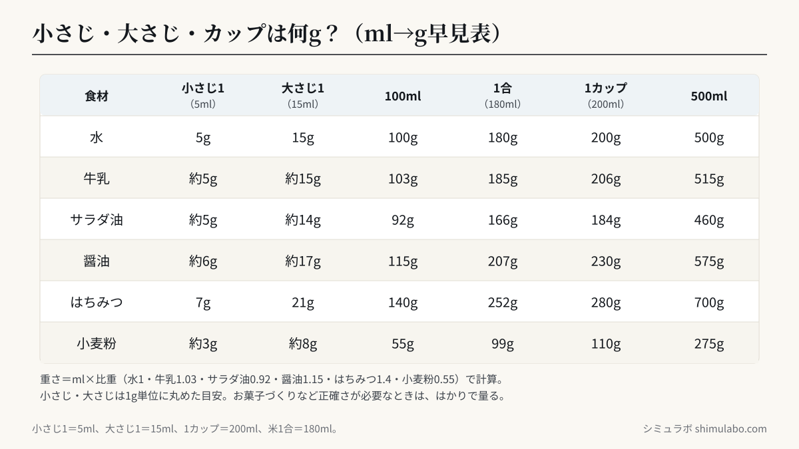

結論：mlは「容量」、gは「重さ」。水は1ml＝1gですが、油は0.92g、はちみつは1.4gと比重で変わります。
食材別の比重（1mlあたりのg）
| 食材 | 1ml |
|---|---|
| 水 | 1.0g |
| 牛乳 | 1.03g |
| サラダ油 | 0.92g |
| 醤油 | 1.15g |
| はちみつ | 1.4g |
| 小麦粉 | 0.55g |






図はタップすると大きく表示されます。資料やSNSに使うときは、出典「シミュラボ」とページのURLを添えてください。
100ml・180ml・200mlは何グラム？（早見表）
| 食材 | 100ml | 180ml（1合） | 200ml（1カップ） | 500ml |
|---|---|---|---|---|
| 水 | 100g | 180g | 200g | 500g |
| 牛乳 | 103g | 185g | 206g | 515g |
| サラダ油 | 92g | 166g | 184g | 460g |
| 醤油 | 115g | 207g | 230g | 575g |
| はちみつ | 140g | 252g | 280g | 700g |
| 小麦粉 | 55g | 99g | 110g | 275g |
粉ものは、ふるい方や詰め方で同じ量でも重さが1〜2割変わります。お菓子づくりなど正確さが必要なときは、はかりで量ってください。
よくある質問
- 1mlは何g？
- 水なら1ml＝1gです。食材によって違い、牛乳は約1.03g、サラダ油は約0.92g、醤油は約1.15g、はちみつは約1.4gです。
- mlとgの違いは？
- mlは体積（かさ）、gは重さの単位です。同じ1mlでも、ものの密度（比重）によって重さが変わります。
- 水なら同じ？
- はい。水は1ml＝1gなので数値はそのままです。
- データは送信されますか？
- いいえ。計算はすべてブラウザ内で完結します。
参考
- 食材の比重（一般的な目安）